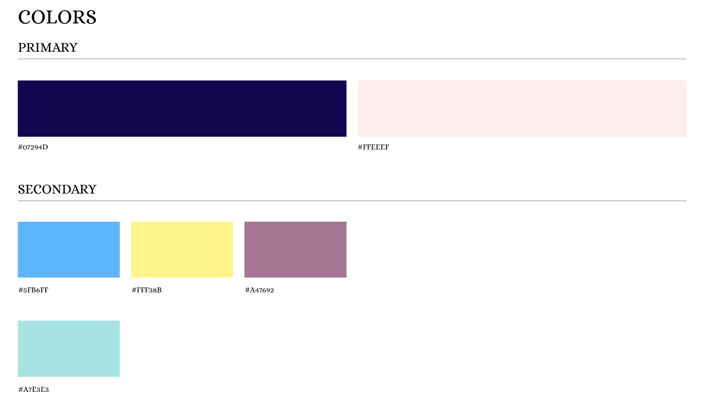

Malloo Knits is a crochet and knitting blog. They post different patterns for those who crochet, knit, or are just beginning to learn one of those. Malloo Knits also has resources on the website for those who want to start their own blog. Some of the weaknesses I noticed right away on the website was that the logo or name of the site wasn’t visible when the home page is first opened up on desktop. Other weakness I noticed was that they had a lot of pictures everywhere which caused users to struggle to find what they were looking for on the pages and could also easily distract them from their task. The website also didn’t have a page for all the patterns which makes it difficult to navigate to the pattern that the users want.
One of the goals I had for this redesign was to restructure the home page. This included reducing the amount of images and putting the logo at the top so it could be seen when the home page is first opened. Another goal was to create a page for the patterns. This would make it easier for users to find them.
The website appeals to those who crochet, knit or want to learn. It can also appeal to those who are looking to start their own blog through the resources the site posts. A user persona was created to reflect this target audience. Then four Individuals who fit the target audience participated in a card sort exercise. Overall it produced similar results. The results received from this card sort influenced the decisions made when redesigning the site map of the website.
After the research I started brainstorming some ideas for the new layout for the website. Nine wireframes were created with three for the home page, pattern page, and the about page. I narrowed it down to the best one for each page. For the home page, since it is a crocheting and knitting blog, I didn’t want to use too many boxes so I chose the design that incorporated the use of circles into the layout. For the about page I chose the one that kind of broke out of the grid and then for the pattern page I chose the design that laid out the patterns in a way that made it easy to look through.
During the design of the wireframes is also when I chose what color scheme I wanted to use for the redesign. The final color palette includes navy blue and light pink as the primary colors with blue, yellow, purple, and teal as the secondary colors. The redesigned color palette was chosen to make it so the website wasn’t as white and grey as the original. The redesigned color palette has some contrast while also creating a friendly atmosphere for a crocheting and knitting blog.
The final prototype accomplished the goals that it was set out to. The logo is now at the top of all the pages and is clearly visible when visiting the home page. There isn't as many images and distractions for the users. A pattern page was designed and created to make it easier for users to find what they are looking for.